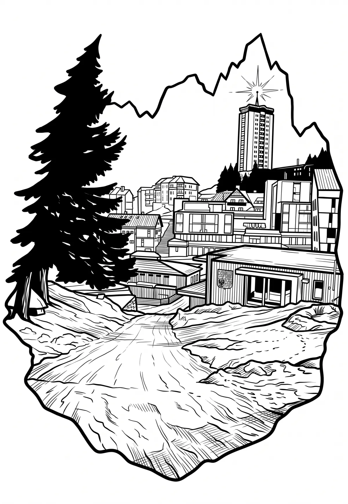

Špindlerův Mlýn
Královéhradecký kraj · 718 m n. m.

město · #077
Špindlerův mlýn (Břetenský, Vřetenový, Spindelmühle) je zaniklý vodní mlýn ve Špindlerově Mlýně (původně Svatý Petr), který stál mezi ulicemi Špindlerovská a Svatopetrská. Byl postaven na horním toku Labe v obci, kterou po něm později pojmenovali. Budova existující v letech 1784–2022 byla jedním ze symbolů Špindlerova Mlýna a dominantou centra horského městečka, které je po ní pojmenované.